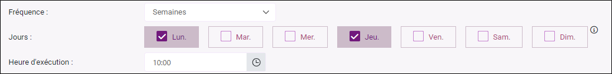
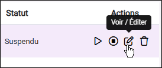
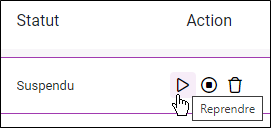
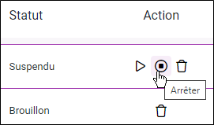

Automatiser l'envoi d'une invitation / relance
Après avoir rédigé le message à envoyer, vous pouvez procéder à l'automatisation de l'envoi d'une invitation / relance.
Pour ce faire, procédez comme suit :
-
Accédez à l'étape de paramétrage de l'envoi d'une invitation / relance en envoi automatisé.
Le type d’envoi automatisé se sélectionne lors de la création de l’envoi.
-
Sélectionnez le message à utiliser en cliquant sur le bouton Choisir un autre message. Par défaut, le message correspondant au type d’envoi (invitation ou relance) est sélectionné.
-
 (Facultatif) Invitations et relances par message RCS uniquement: Activez le repli SMS
(Facultatif) Invitations et relances par message RCS uniquement: Activez le repli SMS
Activez le repli SMS pour envoyer un message SMS aux destinataires qui ne peuvent pas recevoir de messages RCS.
REMARQUE : Certains destinataires peuvent ne pas recevoir de messages RCS si cette fonctionnalité est désactivée sur leur téléphone ou si leur appareil n’est pas compatible.
Pour ce faire :
-
Cochez l'option Activer le repli SMS.
-
Cliquez sur Choisir un message SMS puis sélectionnez le message à utiliser.
-
-
Définissez les paramètres de l'automatisation depuis la partie Temporalité :
-
Rythme de vérification : définissez la fréquence d'exécution de l'automatisation en Minutes / Heures / Jours / Semaines / Mois et les sous options qui vont avec.
-
Pour une fréquence en Minutes / Heures / Jours : définissez une valeur dans le champ Exécuter tous les.
-
Pour une fréquence en Semaines : sélectionnez les jours de la semaine à utiliser pour l'envoi puis définissez l'heure d'exécution.
EXEMPLE : L'invitation ou la relance sera envoyée chaque semaine, les lundis, jeudis, à 10:00.

REMARQUE : La diffusion est déconseillée le dimanche.
-
Pour une fréquence en Mois, cinq possibilités sont à disposition :
Le même jour du mois :
L'invitation ou la relance sera envoyée le x de chaque mois à x heure (la date est à définir dans le champ Chaque et l'heure à définir dans le champ Heure d'exécution).
Tous les premiers :
L'invitation ou la relance sera envoyée tous les premiers (jour de la semaine à définir) du mois à x heure (l'heure à définir dans le champ Heure d'exécution).
EXEMPLE : L'invitation ou la relance sera envoyée, tous les premiers vendredis du mois, à 10:00.
 Tous les derniers :
Tous les derniers :
L'invitation ou la relance sera envoyée tous les derniers (jour de la semaine à définir) du mois à x heure (l'heure à définir dans le champ Heure d'exécution).
Le premier jour du mois :
L'invitation ou la relance sera envoyée le premier jour de chaque mois à x heure (l'heure à définir dans le champ Heure d'exécution).
Le dernier jour du mois :
L'invitation ou la relance sera envoyée le dernier jour de chaque mois à x heure (l'heure à définir dans le champ Heure d'exécution).
-
-
Démarrer le : Sélectionnez la date à laquelle l'automatisation doit débuter.
Cela peut être une date dans le futur, permettant de planifier à l'avance le lancement de votre campagne.
-
Arrêter le : Sélectionnez une date de fin de l'automatisation. Une fois cette date atteinte, les envois automatisés seront stoppés.
Si vous ne souhaitez pas définir de date d'arrêt, il suffit de décocher l'option Arrêter le.
-
Différer l'envoi pour chaque destinataire
Cette option permet d’envoyer automatiquement des invitations ou des relances à des dates personnalisées, définies pour chaque destinataire. Plutôt que d’envoyer tous les messages à une date fixe, cette fonctionnalité ajuste l’envoi en fonction d’un champ de fusion contenant une date propre à chaque contact dans la liste des destinataires.
Grâce à cette fonctionnalité, chaque destinataire recevra son invitation ou sa relance au moment le plus pertinent, améliorant ainsi le taux de réponse et l’efficacité des campagnes.
REMARQUE : Votre fichier de destinataires doit inclure un champ contenant des dates pour activer cette option.
EXEMPLE : Le client A a effectué un achat le 23 février 2025. Il recevra l'invitation pour répondre au questionnaire le 26 février 2025, soit 3 jours après la date indiqué dans le champ de fusion date_achat présent dans la liste des destinataires.
-
Gestion de la sur-sollicitation (uniquement valable pour les relances automatisées).
La sur-sollicitation se réfère à l'excès de messages envoyés à un même destinataire sur une période de temps limitée, ce qui peut entraîner une fatigue du destinataire, une diminution de l'engagement, et une augmentation des désabonnements ou des signalements comme spam. Une gestion efficace de la sur-sollicitation implique de contrôler la fréquence des envois pour maintenir un équilibre entre la communication avec le destinataire et le respect de son seuil de tolérance.
Dans le cadre d'une relance automatisée, vous pouvez définir des paramètres de sur-sollicitation en utilisant les options suivantes :
-
Relancer chaque destinataire x fois maximum
Le destinataire sera relancé au maximum x fois (à définir, minimum 1, maximum 10 fois).
-
Respecter un intervalle minimal de x jours entre deux envois (à définir, minimum 1 jour, maximum 365 jours entre deux envois).
REMARQUE : Ce paramétrage prend en compte l'ensemble des envois déjà effectués au sein de la campagne, incluant les invitations initiales, de sorte que la relance automatique interviendra en tenant compte des précédentes sollicitations et dans le cadre des limites fixées pour éviter la sur-sollicitation.
-
-
-
(Facultatif) Modifiez les options de régulation si nécessaire (cela permet d’optimiser la délivrabilité, notamment pour les campagnes d’emailing volumineuses).
REMARQUE : Cette option ne concerne que les invitations et relances par email.
-
Cliquez sur Valider.
Une fenêtre de confirmation s'affiche avec un récapitulatif de l'envoi et, le cas échéant, des messages d'avertissement.
-
Cochez la case J'accepte les conditions générales d'utilisation * puis cliquez sur Valider.
Une fois votre message envoyé, accédez en temps réel au suivi détaillé de votre canal.


Il est tout à fait possible de mettre en pause, de modifier, puis de reprendre ou d'arrêter un envoi automatisé (invitation ou relance).
Ces actions sont utiles lorsque vous devez apporter des modifications après le lancement de l'automatisation.
Mettre en pause, modifier et reprendre un envoi automatisé
-
Accédez à la liste des envois.
-
Cliquez sur l'icône Mettre en pause depuis la colonne Action pour l'envoi concerné.
-
Cliquez sur l'icône Voir / Éditer pour accéder à l'envoi et effectuer les modifications nécessaires.

-
Cliquez sur l'icône Reprendre pour reprendre l'envoi automatisé à la suite des modifications effectuées.


Arrêter un envoi automatisé
Procédez comme suit pour arrêter un envoi automatisé :
-
Accédez à la liste des envois.
-
Cliquez sur l'icône Mettre en pause depuis la colonne Action pour l'envoi concerné.
-
Cliquez sur l’icône Arrêter.

-
Un message de confirmation s'affiche, cliquez sur Oui.